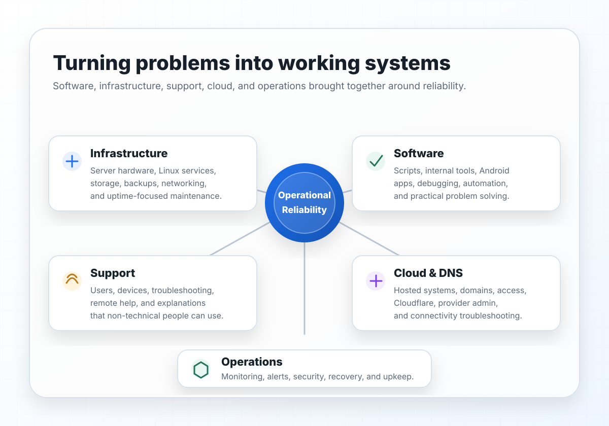

Server, networking, storage, and backups
Server hardware, Linux services, local networking, file storage, and backup routines.
Practical Technical Generalist
Early-career technologist with hands-on responsibility for a live business environment: server hardware, Linux services, networking, backups, support, monitoring, access management, cloud systems, software development, and custom internal software. I work comfortably with users and colleagues across technical and non-technical work.

Current Work
In my current role, I work across hardware, systems, storage, networking, support, cloud services, software development, and internal tooling.
I own, configure, and maintain the main server hardware and software environment, along with networking, storage, and backups.
I build scripts, internal tools, Windows and Linux programs, and Android apps where custom software is the practical answer.
I support employees locally and remotely, troubleshoot issues clearly, and explain technical concepts in a way non-technical users and teammates can work with.
I manage access, system upkeep, monitoring, alerts, firewalling, updates, and backups with a focus on reliability and recoverability.
Technical Generalist Work
Work that moves between systems, software, infrastructure, support, and technical research without losing sight of reliability.
Server hardware, Linux services, local networking, file storage, and backup routines.
Python, Bash, C++, Windows and Linux programs, Android/Kotlin apps, and practical software development across multiple environments.
User support, issue documentation, troubleshooting, and clear explanations for non-technical colleagues.
Access control, firewalling, monitoring, alerting, and backup planning as part of dependable operations.
Learning new tools, comparing options, reading documentation, and avoiding unnecessary reinvention.
Broad technical range across software, systems, infrastructure, support, cloud, automation, and careful problem solving.
Featured Work
Sanitized case studies covering responsibilities, tools, and practical technical decisions.
Live environment ownership across server hardware, Linux services, local networking, employee devices, support, monitoring, and day-to-day operations.
Read case studyBusiness file access, storage workflows, backup routines, permissions, and recovery-minded operational thinking.
Read case studyInternal tools, scripts, alerting, monitoring, and reductions in manual administrative work.
Read case studyOpen-Source Work
These projects are useful proof of how I approach mobile development, architecture, networking, privacy, and product-level engineering.

Privacy-focused Android app for encrypted local location logging and end-to-end encrypted location sharing. Strongest proof of architecture, implementation depth, and sustained software work.
View repositoryPrivate local file sharing from Android to a browser over LAN or hotspot. Good proof of broad technical range across app development, networking, local hosting, and build integration.
View repositoryModern Android weather app focused on glanceability, privacy controls, and polished UI. Good proof of product-minded mobile development and practical API-driven software work.
View repository